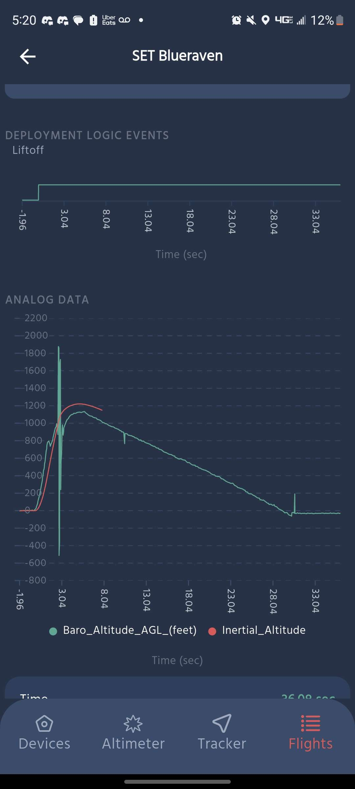

Osiris
Launched a 9.4-foot two-stage rocket. Stages separate in flight via a Marman clamp mechanism, and the vehicle surpassed its simulated apogee prediction by 1.8× on its first flight.
Vehicle

Two-stage design
Marman clamp separationOsiris is a 9.4-foot two-stage vehicle. The two stages are held together by a Marman clamp — a split-ring band fastener that releases cleanly under a pyrotechnic charge, separating the stages in flight without imparting significant lateral impulse to either section.
The Marman clamp approach keeps both stages stacked as a single integrated assembly on the pad and separates them reliably at altitude. Compared to shear-pin or rail-based stage separation, the band clamp is more compact and repeatable, and the interface it creates between stages is rigid enough to survive ignition loads while still releasing on command.

Flight — Oct 17, 2026
Osiris flew on October 17, 2026. The vehicle reached an apogee of 1877 feet — 1.8 times the altitude predicted by pre-flight simulations. Stage separation was nominal.